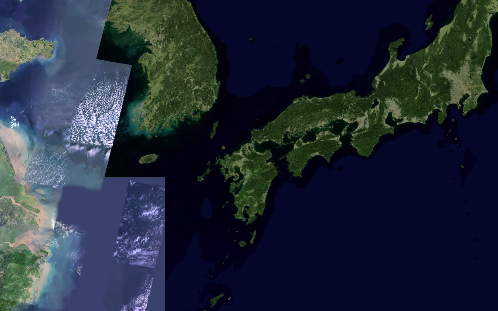

Make time for focus.
SHA
Shanghai
→
HND
Tokyo
150
min
Book flight
↗
Seat: 21A
What do you want to focus?
⌘ Work
▤ Read
✎ Study
✳ Create
Confirm
SHA
✈
HND
Shanghai
2h 30m
Tokyo
SEAT
21A
DISTANCE
1,760 km
BOARDING
Now
DATE
17 NOV 2026

SHA
HND
Ⅱ
⌖
▱
Time Remaining
2
h
30
min
Distance Remaining
1,760
km
✓
You've arrived.
ROUTE
SHA » HND
STATUS
ARRIVED
FOCUS TIME
150 MIN
SEAT
21A